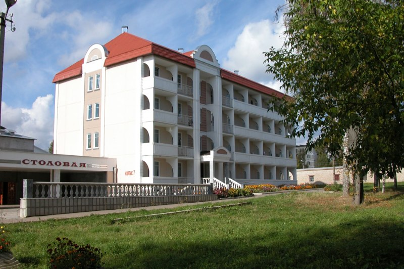

Кашин
Город Кашин - город в России, административный центр Кашинского района Тверской области. Один из древнейших городов Тверской земли. Город расположен на юго-востоке области, в 150 км от Твери, в 180 км от Москвы, недалеко от границы с Ярославской областью.
Площадь города составляет 11 кв. км.
Численность населения составляет 14475 человек.
На территории города осуществляют деятельность предприятия электротехнической, пищевой, легкой промышленности, сельского хозяйства; 2 колледжа, 3 общеобразовательные школы, 9 дошкольных образовательных учреждений, учреждения культурно-досугового типа, 4 библиотеки, центральная районная больница.
В г. Кашин располагается старейшая бальнеологическая здравница Тверской области ООО «Санаторий «Кашин».
